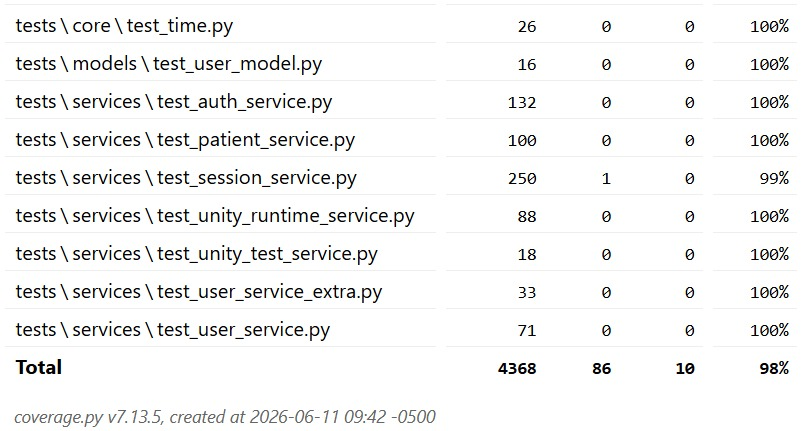

Guía principal y resultados de la suite de pruebas automatizadas del servidor de RehabACV, desarrolladas con pytest sobre los módulos críticos de la API REST en Python.
La suite cubre los nueve módulos críticos del servidor: desde el bootstrap de la base de datos y la capa de seguridad hasta la generación de PDF, el enrutamiento de API y las utilidades de fecha. Cada caso fue diseñado con mocks de sesión SQLAlchemy para aislar la lógica de negocio de la persistencia real.
Se adjuntan las capturas de pantalla de la terminal correspondientes a la compilación y ejecución de la suite de pruebas unitarias del backend locales.

Explora el desglose completo de los 44 casos de prueba ejecutados satisfactoriamente en el backend de RehabACV.
Se encarga de preparar la base de datos para su uso, incluyendo migración de esquemas antiguos, copia de datos, eliminación de dependencias obsoletas y creación del usuario administrador inicial.
| ID | Caso de Prueba | Entrada / Condición | Resultado Esperado | Resultado Real |
|---|---|---|---|---|
| UT-BTS-001 | Orquestar bootstrap completo | Ejecución de bootstrap_database() |
Se invocan todas las funciones necesarias de inicialización | PASS |
| UT-BTS-002 | Detectar esquema ya migrado | Existe tabla users_legacy |
El método finaliza sin modificar el esquema | PASS |
| UT-BTS-003 | Renombrar tabla users antigua | Tabla users con columnas faltantes |
La tabla es renombrada a users_legacy |
PASS |
| UT-BTS-004 | Eliminar dependencias heredadas | Existen FK hacia users_legacy |
Se eliminan tablas dependientes | PASS |
| UT-BTS-005 | Manejar ausencia de tabla legacy | No existe users_legacy |
No se realiza ninguna copia | PASS |
| UT-BTS-006 | Migrar usuarios heredados | Registros existentes en users_legacy |
Los usuarios son copiados correctamente | PASS |
| UT-BTS-007 | Evitar duplicados | Usuarios ya migrados | No se insertan registros duplicados | PASS |
| UT-BTS-008 | Detectar referencias heredadas | FK apuntando a users_legacy |
Retorna True |
PASS |
| UT-BTS-009 | Verificar ausencia de referencias heredadas | Sin FK hacia users_legacy |
Retorna False |
PASS |
| UT-BTS-010 | Eliminar tablas dependientes | Ejecución del método | Se ejecutan todas las sentencias DROP |
PASS |
| UT-BTS-011 | Procesar nombres heredados | Nombre completo, email o nombre simple | Se generan correctamente nombre y apellido | PASS |
| UT-BTS-012 | Validar configuración mínima | Configuración incompleta | No se crea usuario administrador | PASS |
| UT-BTS-013 | Verificar existencia del rol | Rol SuperAdmin inexistente |
No se crea usuario | PASS |
| UT-BTS-014 | Actualizar administrador existente | Usuario administrador ya registrado | Los datos del usuario son actualizados | PASS |
| UT-BTS-015 | Crear administrador inicial | Usuario inexistente y configuración válida | Se crea un nuevo usuario administrador | PASS |
Gestiona la carga y validación de parámetros de configuración de la aplicación, como las variables de entorno.
| ID | Caso de Prueba | Entrada / Condición | Resultado Esperado | Resultado Real |
|---|---|---|---|---|
| PU-BACK-16 | Verificar prioridad de archivo .env | Existe .env |
Retorna ruta de .env |
PASS |
| PU-BACK-17 | Verificar uso de .env.example como respaldo | Existe .env.example |
Retorna ruta de .env.example |
PASS |
| PU-BACK-18 | Verificar ausencia de archivos de configuración | No existen archivos | Retorna () |
PASS |
| PU-BACK-19 | Verificar normalización de DEBUG | release, "dev", True |
Convierte correctamente a booleano | PASS |
Administra la conexión con la base de datos, la creación de directorios para SQLite, la configuración de restricciones (Foreign Keys) y el manejo seguro de sesiones y transacciones.
| ID | Caso de Prueba | Entrada / Condición | Resultado Esperado | Resultado Real |
|---|---|---|---|---|
| PU-BACK-20 | Ignorar BD no SQLite | URL PostgreSQL | No ejecuta mkdir |
PASS |
| PU-BACK-21 | Ignorar SQLite en memoria | sqlite:///:memory: |
No ejecuta mkdir |
PASS |
| PU-BACK-22 | Crear directorio para SQLite física | Ruta SQLite válida | Ejecuta mkdir una vez |
PASS |
| PU-BACK-23 | Ignorar conexiones no SQLite | DummyConnection |
Retorna None |
PASS |
| PU-BACK-24 | Activar claves foráneas | Conexión SQLite | foreign_keys = 1 |
PASS |
| PU-BACK-25 | Realizar rollback ante error | Excepción durante sesión | Ejecuta rollback y close | PASS |
Permite la generación de documentos PDF a partir de plantillas HTML y datos clínicos, con manejo de dependencias opcionales como WeasyPrint.
| ID | Caso de Prueba | Entrada / Condición | Resultado Esperado | Resultado Real |
|---|---|---|---|---|
| PU-BACK-26 | Generar PDF básico | Título y líneas de contenido | PDF válido generado | PASS |
| PU-BACK-27 | Generar PDF desde plantilla | Template HTML y datos clínicos | PDF generado correctamente | PASS |
| PU-BACK-28 | Manejar ausencia de WeasyPrint | Dependencia inexistente en entorno | Lanza RuntimeError |
PASS |
Implementa protección como la validación de contraseñas, generación de tokens para las sesiones y la recuperación segura de credenciales.
| ID | Caso de Prueba | Entrada / Condición | Resultado Esperado | Resultado Real |
|---|---|---|---|---|
| PU-BACK-29 | Rechazar contraseña corta | Ab1 |
HTTP 422 | PASS |
| PU-BACK-30 | Rechazar falta de mayúsculas | onlylowercase123 |
HTTP 422 | PASS |
| PU-BACK-31 | Verificar hash válido | Valida123 |
Verificación exitosa | PASS |
| PU-BACK-32 | Soportar hash heredado | hashed_clave |
Validación correcta | PASS |
| PU-BACK-33 | Rechazar hash inválido | Formatos incorrectos | Retorna FALSE |
PASS |
| PU-BACK-34 | Generar contraseña segura | Longitud 4 | ≥8 caracteres con complejidad requerida | PASS |
| PU-BACK-35 | Generar token de sesión | Ninguna | Token y hash válidos generados | PASS |
| PU-BACK-36 | Validar token de recuperación | Token válido, alterado y expirado | Acepta el válido y rechaza los inválidos | PASS |
| PU-BACK-37 | Rechazar solicitudes sin credenciales | Credenciales nulas (None) |
Genera excepción HTTP 401 por ausencia de token Bearer | PASS |
| PU-BACK-38 | Resolver contexto autenticado desde token válido | Token abc.token y objeto de BD simulado |
Retorna el contexto autenticado resuelto por el servicio | PASS |
Se encarga de ejecutar tareas necesarias al iniciar la aplicación: carga del bootstrap de la base de datos, carga de configuraciones y la limpieza o cierre de sesiones obsoletas.
| ID | Caso de Prueba | Entrada / Condición | Resultado Esperado | Resultado Real |
|---|---|---|---|---|
| PU-BACK-39 | Ejecutar bootstrap inicial | Ejecución de main |
Llama bootstrap_database() |
PASS |
| PU-BACK-40 | Verificar creación de vistas e índices adicionales | BD SQLite en memoria con esquema inicial y ejecución de
apply_sqlite_extras()
|
Los objetos adicionales son creados y consultables desde
sqlite_master
|
PASS |
Proporciona funciones para obtener, convertir y calcular fechas y horas, incluyendo soporte para zonas horarias y duraciones.
| ID | Caso de Prueba | Entrada / Condición | Resultado Esperado | Resultado Real |
|---|---|---|---|---|
| PU-BACK-41 | Verificar conversiones de fecha y hora | Fechas válidas, inválidas y nulas | Conversión correcta en todos los casos | PASS |
Define la estructura y comportamiento de los usuarios del sistema, incluyendo propiedades y atributos asociados a la entidad usuario.
| ID | Caso de Prueba | Entrada / Condición | Resultado Esperado | Resultado Real |
|---|---|---|---|---|
| PU-BACK-42 | Calcular propiedades derivadas del usuario | Usuario con id=1, email="a@b.c" y nombres
"First Last", "Only" y ""
|
Propiedades first_name, last_name,
full_name y representación textual correctas
|
PASS |
Tiene la responsabilidad de proporcionar información y servicios comunes que los endpoints necesitan antes de ejecutar su lógica principal, como la extracción de metadatos de la petición entrante.
| ID | Caso de Prueba | Entrada / Condición | Resultado Esperado | Resultado Real |
|---|---|---|---|---|
| PU-BACK-43 | Extraer IP y User-Agent desde petición HTTP | Request con IP 127.0.0.1 y User-Agent pytest-agent
|
Retorna contexto con ip_address="127.0.0.1" y
user_agent="pytest-agent"
|
PASS |
| PU-BACK-44 | Asignar valores por defecto sin información del cliente | Request sin cliente y sin cabeceras | Retorna contexto con ip_address="0.0.0.0" y
user_agent=None
|
PASS |
La ejecución exitosa de los 44 casos de prueba unitarios con un 100% de éxito (Passed) sobre los nueve módulos críticos del servidor garantiza la integridad del núcleo de RehabACV. La suite valida desde la resiliencia del bootstrap de la base de datos y el control de acceso por roles hasta la correcta serialización de datos clínicos y la generación de reportes en PDF, asegurando una base de código confiable para la atención segura del paciente.